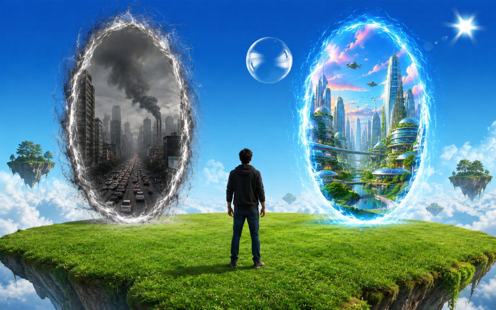
Você acorda em um gramado verde flutuante e percebe dois portais para dimensões totalmente diferentes. O primeiro portal leva para uma cidade cinza que aparenta ser o mundo real atual, cheio de prédios, fumaça e carros. O segundo portal mostra uma cidade totalmente futurista, colorida, tecnológica e sustentável.
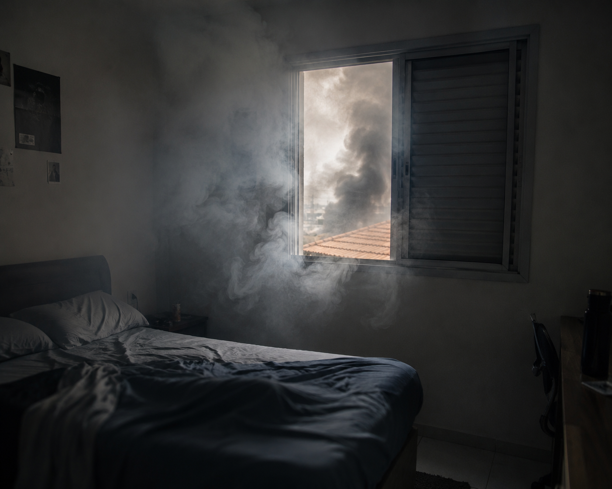
Você acorda de sobressalto em seu apartamento com o alarme tocando. Ao pegar seu telefone, depara-se com várias ligações perdidas de seu chefe. A fumaça cinza da rua entra pela janela.
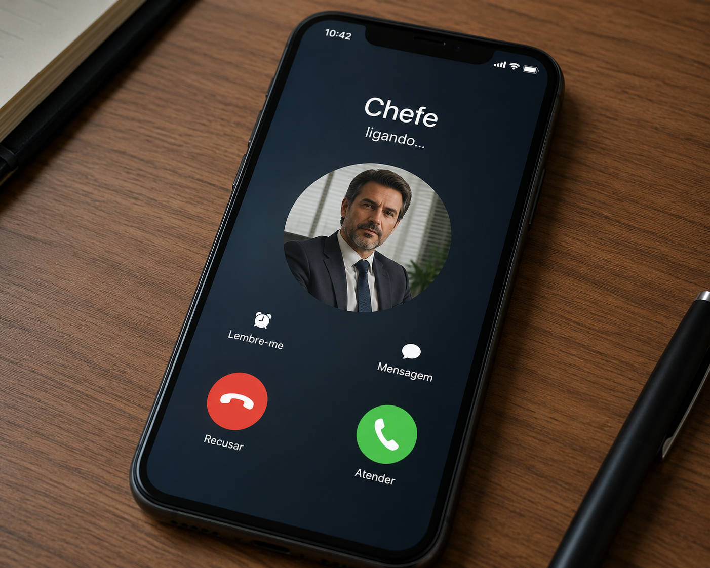
Seu chefe grita do outro lado da linha: "Você está atrasado para a apresentação do projeto Aero! Se não chegar em 15 minutos, está demitido!". O trânsito lá fora está completamente travado.
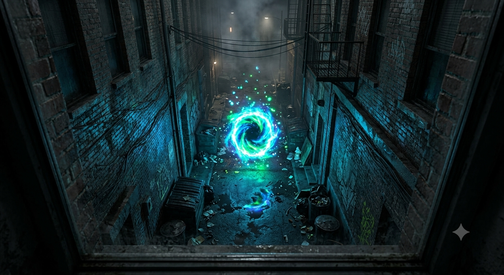
Você desliga o telefone na cara do chefe e decide olhar pela janela. No beco escuro lá embaixo, você avista um brilho familiar azul e verde fluorescente com bolhas flutuantes... É o portal!
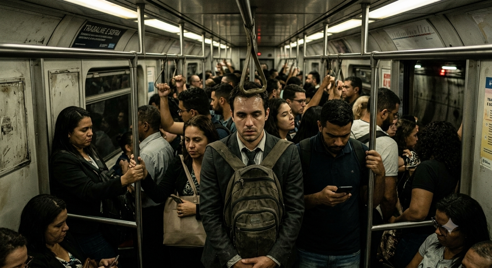
O metrô quebra no meio do caminho. Você fica preso no túnel escuro por duas horas. Quando finalmente sai, recebe uma mensagem dizendo que foi demitido e o projeto Aero foi cancelado. O mundo continua cinza.
💀 FIM RUIM: Preso na Rotina.
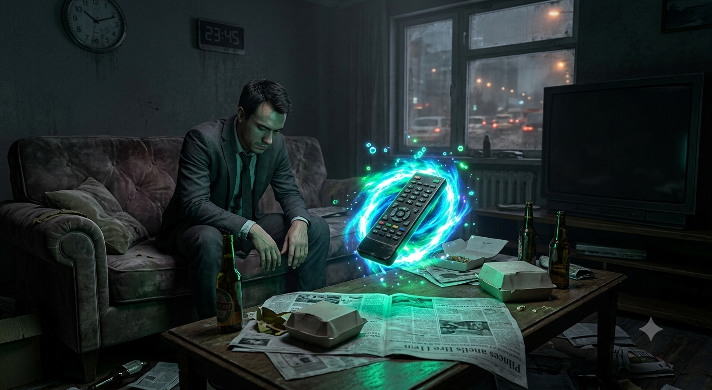
Você decide não fazer nada. Senta-se no sofá enquanto o mundo lá fora continua barulhento e poluído. Porém, você nota que o controle remoto da sua TV antiga começou a flutuar e emitir uma luz neon...
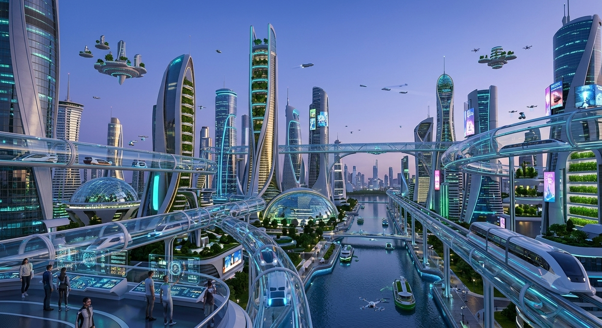
Ao atravessar o portal, você flutua suavemente até o chão de uma praça tecnológica. Árvores de vidro e água corrente dividem espaço com plantas reais. Um pequeno robô flutuante em formato de bolha se aproxima: "Bem-vindo à Neo-Aero. O que deseja investigar?"
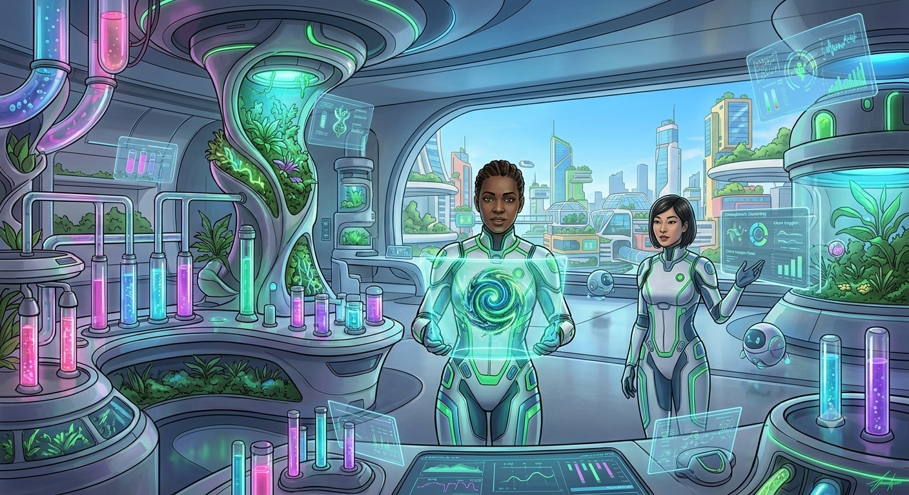
No laboratório, os cientistas explicam que a energia deles vem do oxigênio puro. Eles te dão uma semente biotecnológica capaz de limpar a atmosfera de qualquer planeta instantaneamente.
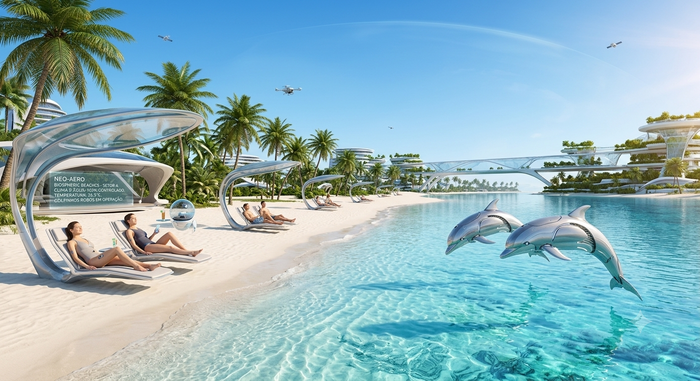
A praia é linda, a água é perfeitamente cristalina e o clima é controlado por satélites. É tão relaxante que você perde a noção do tempo e decide viver ali como um turista eterno, esquecendo suas origens.
🌊 FIM PACÍFICO: O Turista Interdimensional.
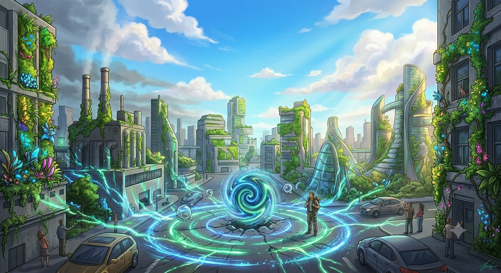
Você cruza o portal de volta e planta a semente no centro da cidade cinza. Em poucos segundos, as chaminés param de expelir fumaça, o céu ganha um tom azul brilhante e plantas começam a cobrir os prédios. Você salvou o seu world real usando a tecnologia do amanhã!
✨ FIM BOM: O Herói Ecológico.
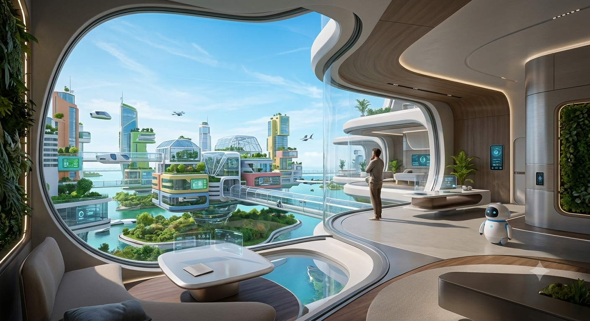
Você decide não se arriscar e aceita a cidadania na Neo-Aero. Você ganha um apartamento flutuante e uma vida sem preocupações, mas no fundo, sempre se perguntará o que teria acontecido com as pessoas que você deixou para trás na Terra poluída.
🏙️ FIM NEUTRO: Uma Nova Vida Exilada.

Ao acessar o botão do controle remoto, a realidade racha! O apartamento cinza e a praça futurista começam a se fundir no mesmo espaço. Os dois portais colapsam, criando uma utopia onde o passado e o futuro coexistem em perfeito equilíbrio. Você quebrou o Paradoxo Aero e se tornou o arquiteto de uma nova linha do tempo!
🔮 FIM SECRETO: O Arquiteto da Realidade.